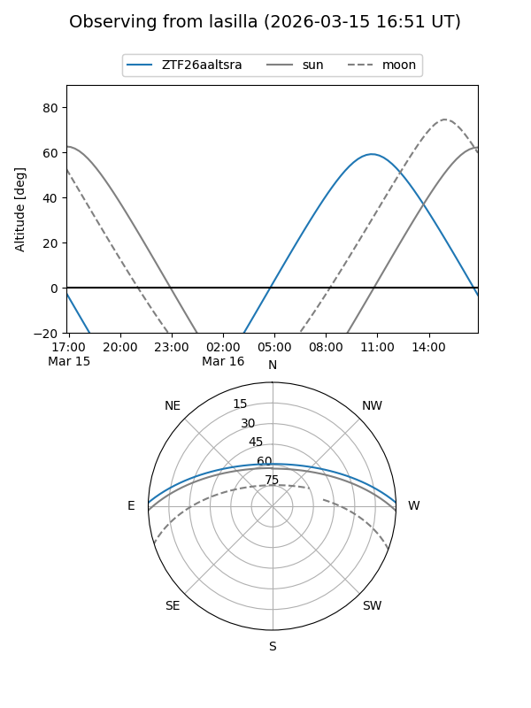
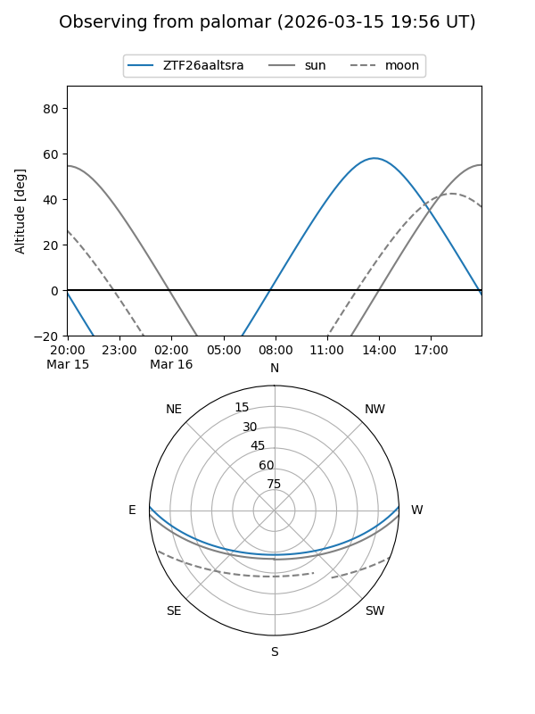

ZTF26aaltsra
Target ZTF26aaltsra at 2026-03-15 13:25
Aliases and brokers:
FINK: link
Lasair: link
ALeRCE: link
alt names
ZTF26aaltsra (ztf,fink_ztf)
Coordinates:
equatorial (ra, dec) = 263.1734,+1.46742
equatorial (HMS+DMS) = 17:32:41.62,+01:28:02.71
galactic (l, b) = (25.0226,+18.14277)
Flags:
Photometry:
last ztfg=18.45
1 ztfg detections
Lightcurve
Visibility


Additional plots